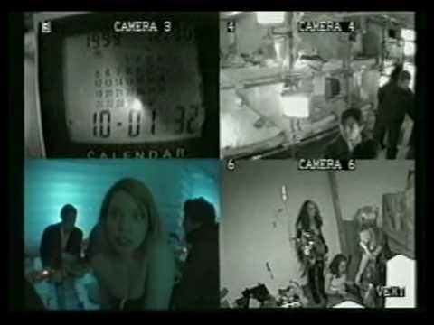
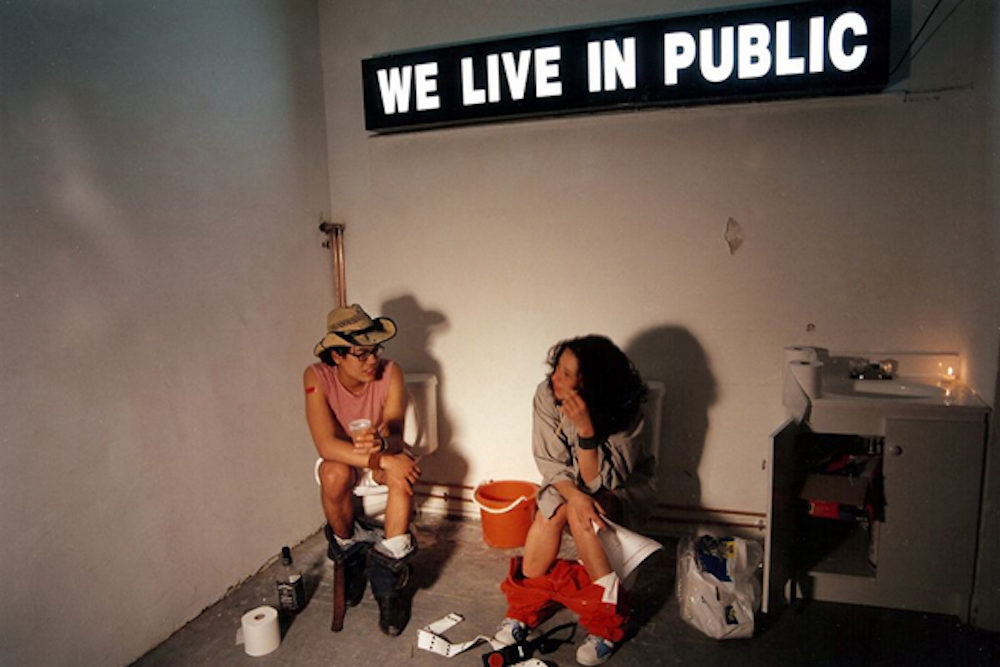
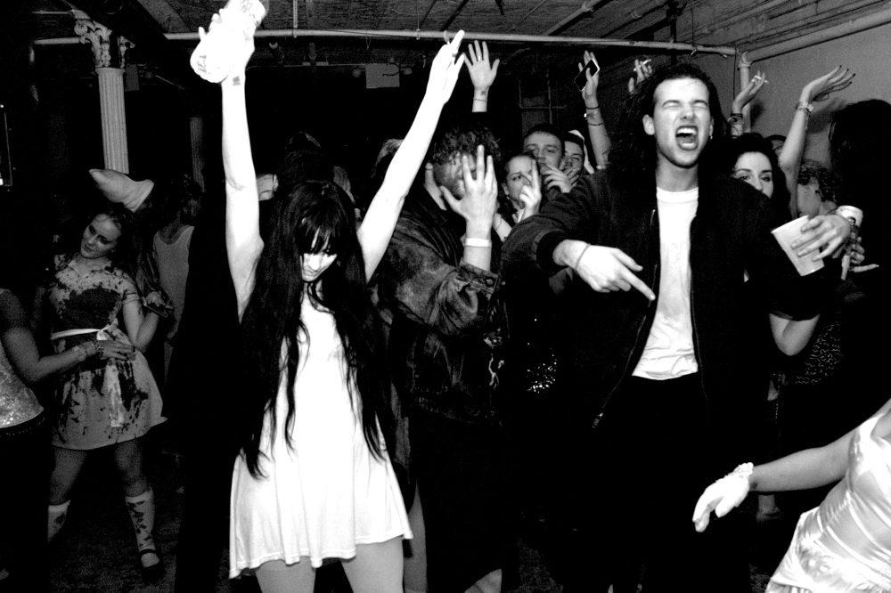
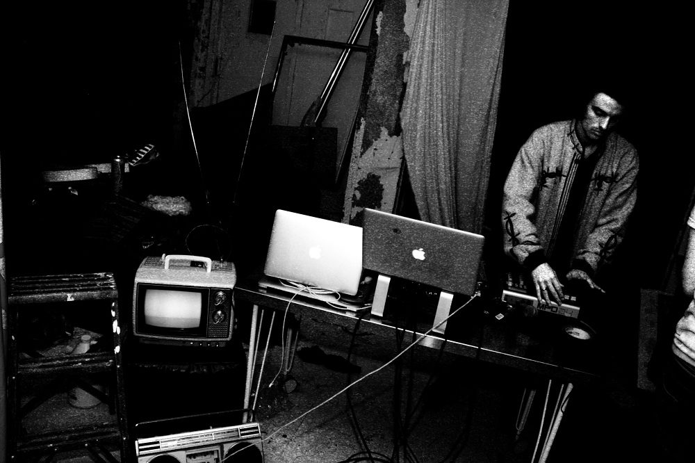
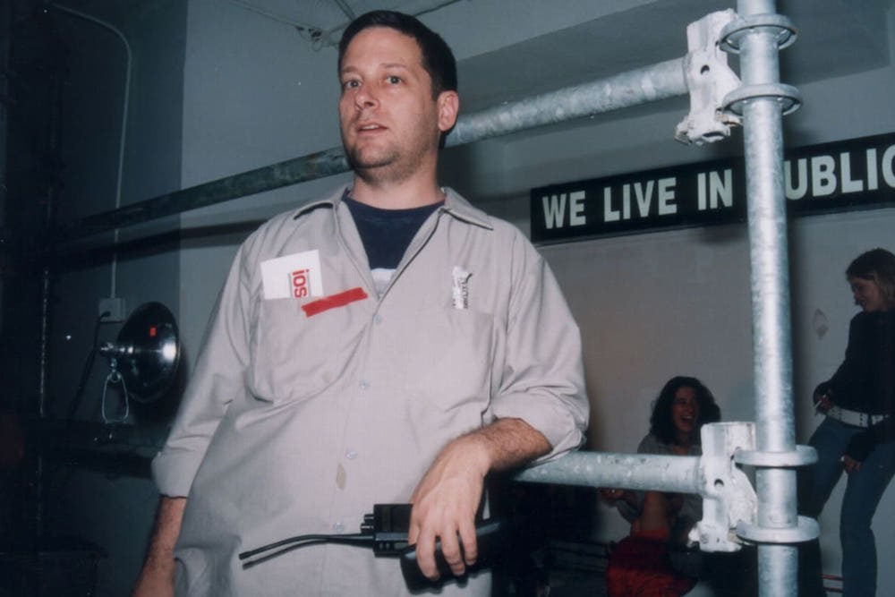
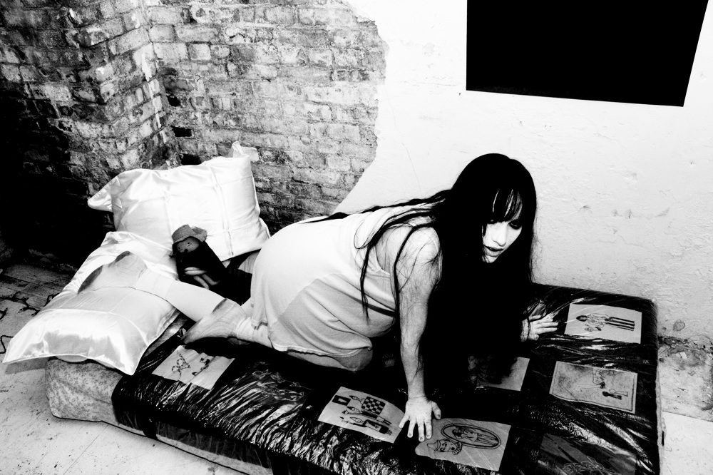
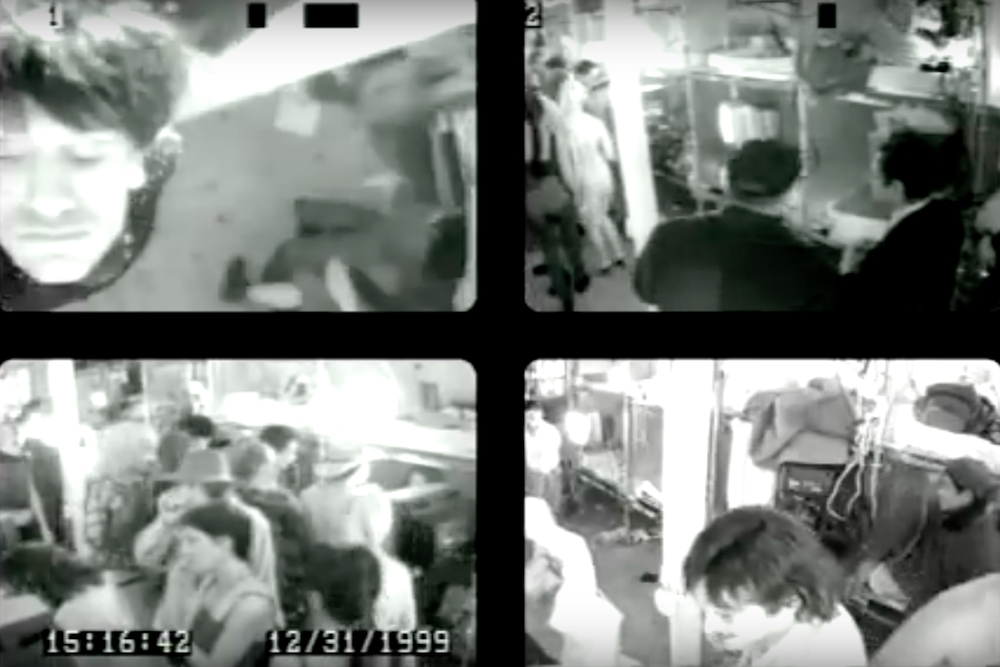
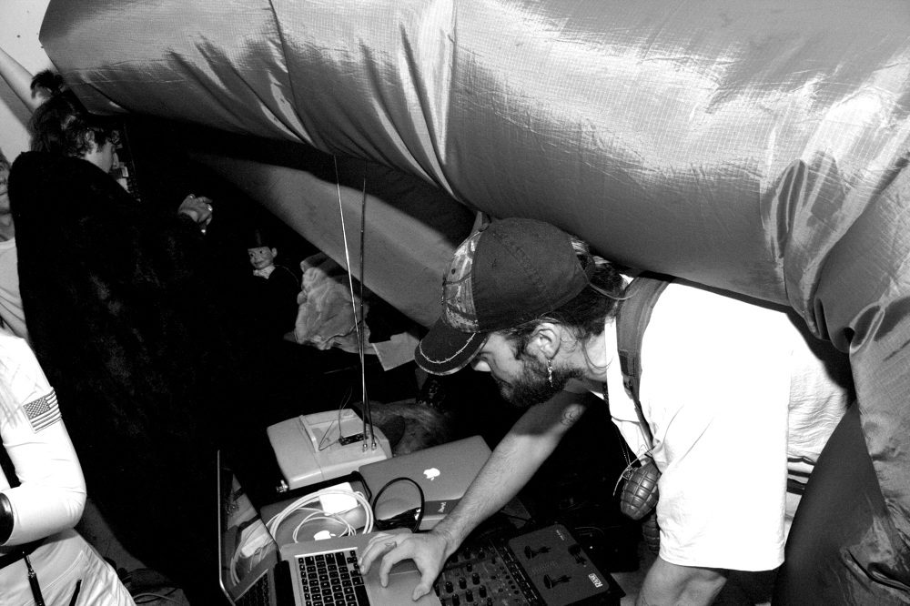
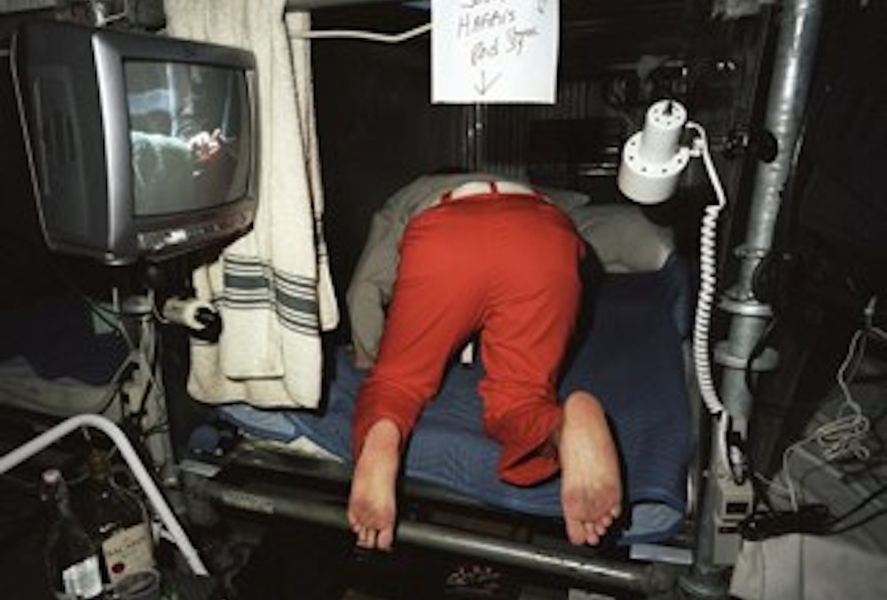

at 355 broadway, near the end of 1999, josh harris created what he saw a social sculpture. 150 artists/participants lived communally in a bunker house, three floors of a loft building.









EVERY SINGLE MOVE WAS WATCHED.
EVERYTHING WAS BROADCASTED ONLINE.
IT WAS THE PRECURSOR TO WHAT WE KNOW AS BIG BROTHER.